Travaux
Pea Studio
Pea Studio est un studio indépendant de jeux vidéo cofondé par Alexandre Perrot et moi-même.
En septembre 2026, Pea Studio sort sa première production sur Steam : « Écailles de chlore ».
Un point-and-click à l'esthétique travaillée. J'ai assuré le game design, la direction artistique,
les illustrations, les animations et le sound design ; Alexandre a programmé le jeu sur Unity.
Pour accompagner la campagne de lancement, une édition papier déclinant l'univers du jeu
dans un « livre dont vous êtes le héros » a été réalisée. Quelques semaines après sa sortie,
le jeu est disponible sur Steam avec des évaluations globalement positives
saluant la direction artistique et la rejouabilité de l'expérience.
Point and click
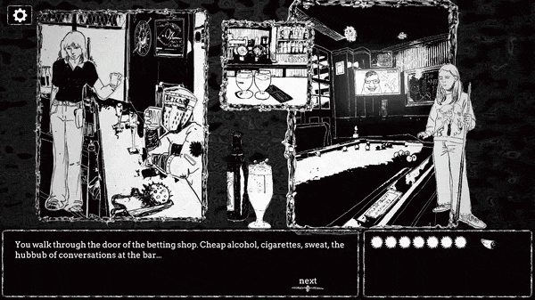
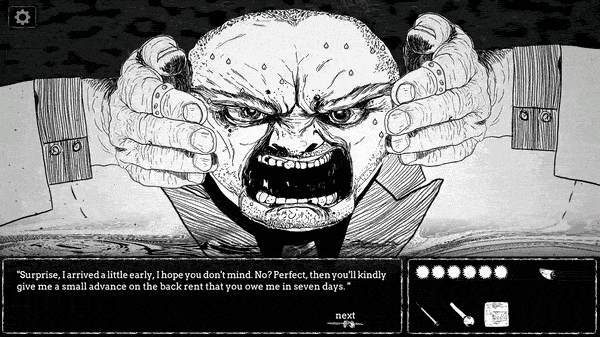
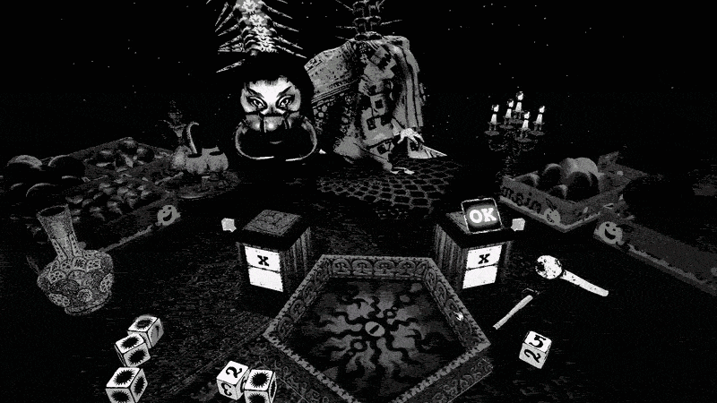
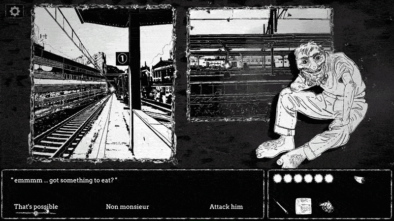
Voir la page steam d'Écailles de chloreEdition imprimée
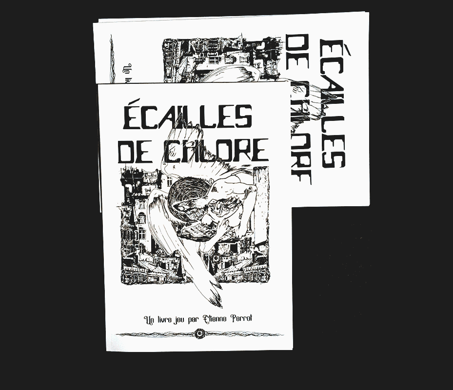
Camera-etc
Dans le cadre de mon stage de fin d'études, j'ai été graphiste, monteur vidéo et animateur 2D pour Camera-etc,
un atelier de production de films d'auteur. En collaborant avec les équipes en tant qu'assistant animateur 2D
et monteur vidéo, j'ai participé au projet « Comment une facture devient une grosse dette », une capsule vidéo expliquant
la ligne du temps du surendettement, de la simple facture à l'accumulation de dettes, ainsi que les services d'aide
pour y remédier, commandée par le Service Médiation de Dettes du CPAS de Molenbeek-Saint-Jean – TRAPES.
J'ai également travaillé comme monteur vidéo et animateur 2D sur d'autres capsules, dont un clip vidéo
dans le cadre du projet Microfilms de Camera-etc.
Comment une facture devient une grosse dette
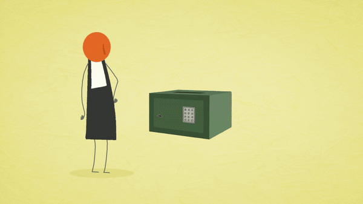
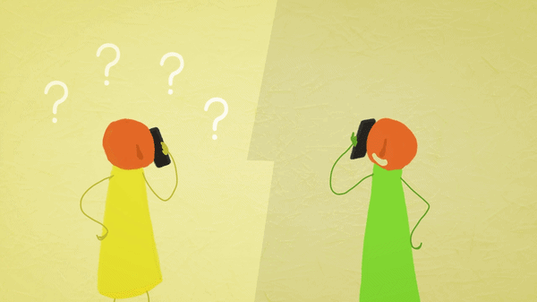
Microfilm Anaïse
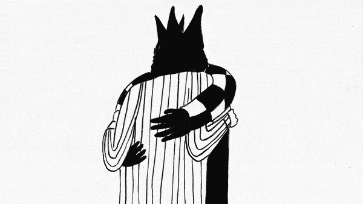
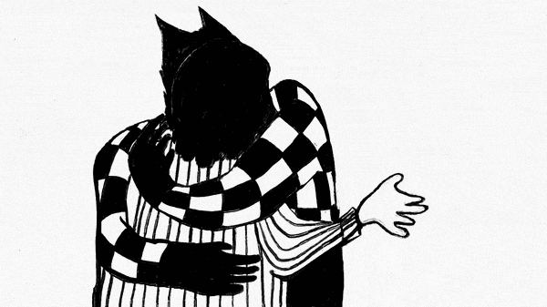
Festival Transat Graphique
Festival franco-belge de design graphique, en collaboration avec l’ESAC Cambrai et Saint-Luc Liège,
ayant eu lieu à Cambrai du 26 avril au 16 mai 2025. Cet événement met en valeur des designers, des artistes,
des studios existants ou en devenir, des étudiant·es et de jeunes diplômé·es. Le festival bâtit de nouveaux réseaux,
des coopérations transfrontalières et intergénérationnelles.
En collaboration avec l’ESAC, j’ai participé à la scénographie d’une partie de l’exposition : pose d’affiches et signalétique.
J’ai également participé au projet PROMPTO! : une banque de ressources graphiques mise en place par et pour des graphistes.
Transat scénographie
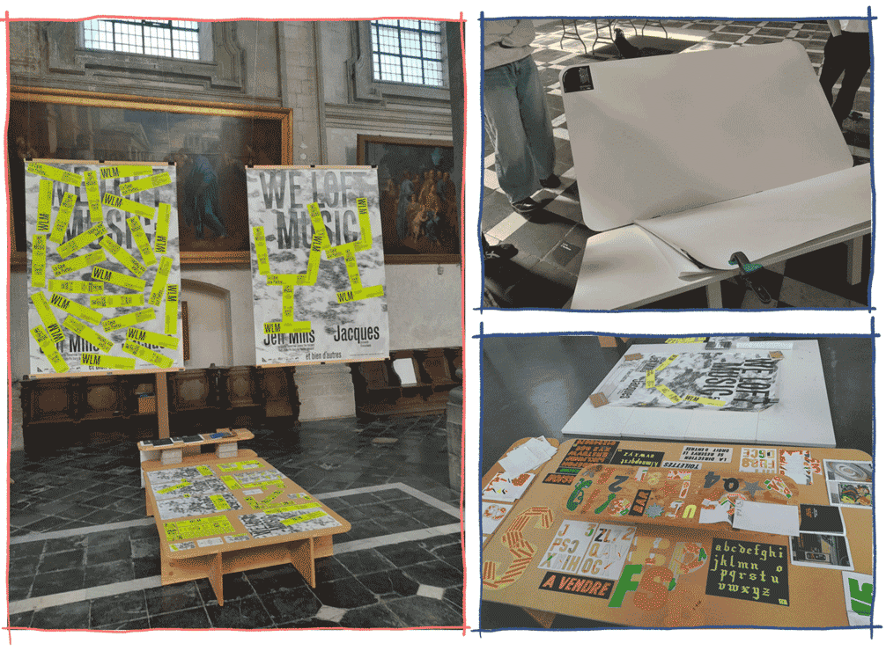
PROMPTO!
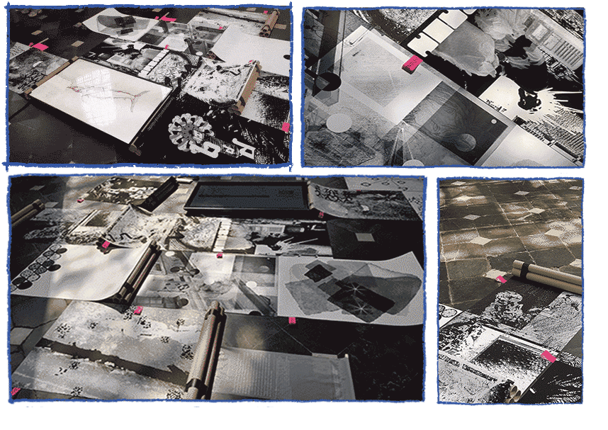
Voir la page du festivalFreelance
Durant mon parcours de freelance, j'ai été amené à travailler sur plusieurs contrats.
Journal du dernier loup, en collaboration avec une illustratrice : mise en page, gestion typographique,
retouche d'images et réalisation de la maquette d'un livre de littérature jeunesse. Suivi du projet jusqu'à l'impression.
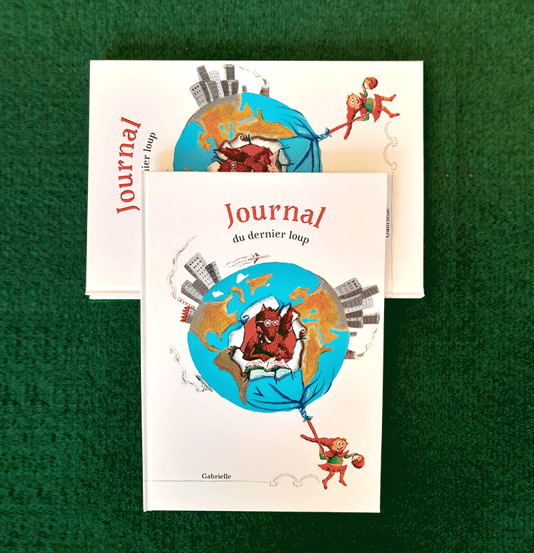
La troupe de la Manuf' : dans le cadre d'un renouvellement d'identité visuelle, la troupe de la Manuf' m'a commandé
un template d'affiche réutilisable ainsi qu'un nouveau logo.
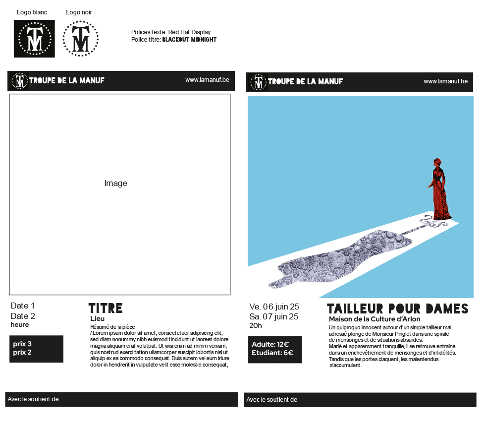
Travaux personnels et non lucratifs
Les poissons flingueurs : fanzine autoproduit contenant une bande dessinée réalisée en cadavre exquis,
illustré par Alexandre Perrot et moi-même, imprimé et relié par mes soins.
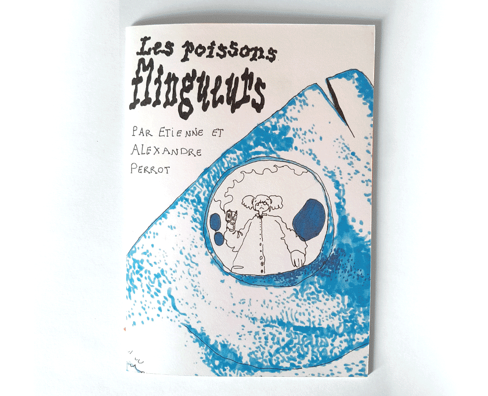
Rêve party : kaléidoscope animé sur After Effects et décliné sur support imprimé en sériegraphie, réalisé dans le cadre de mes études.
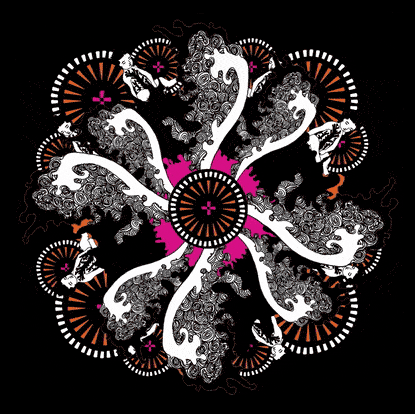
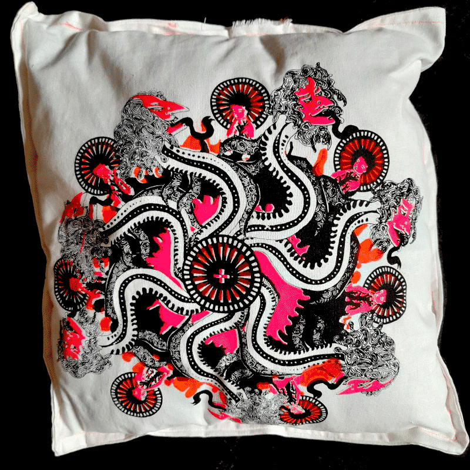
Maitrank 2024 : campagne de communication réalisée pour la fête du Maitrank d'Arlon dans le cadre de mes études.
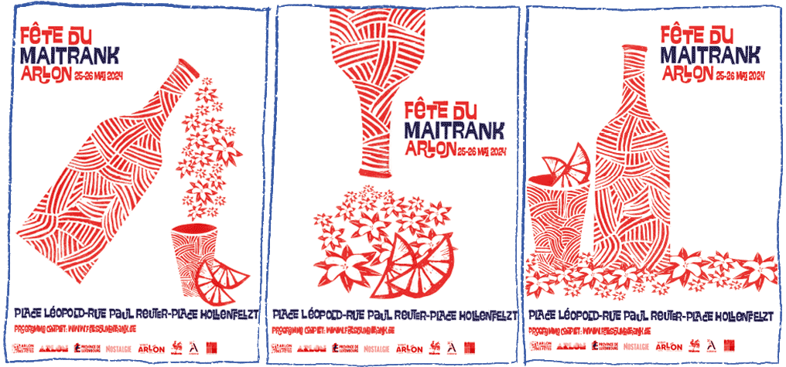
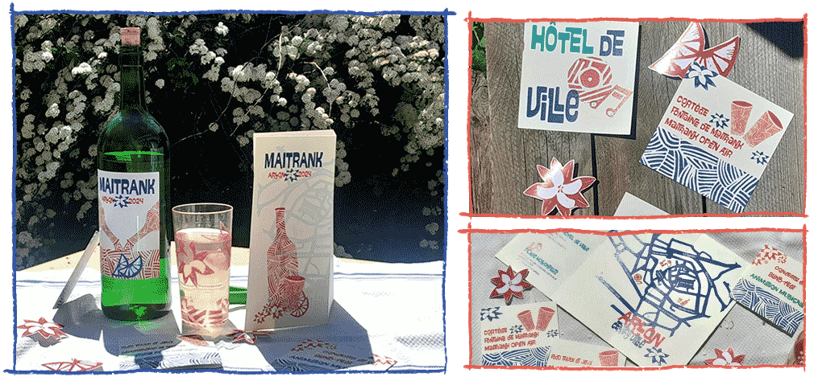
Brochure CAP : brochure crée pour les Chiroux dans le cadre de mes études.
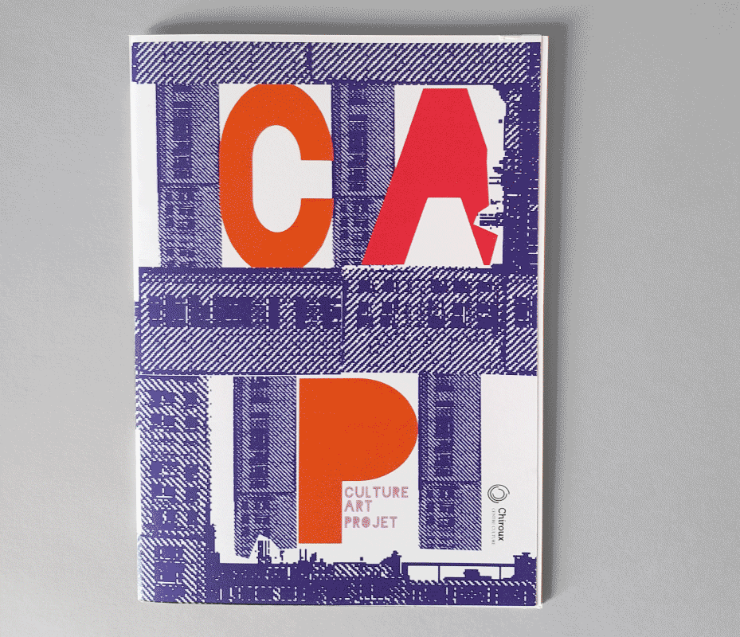
Atlas sensible : fanzine d'urban sketching auto-édité.
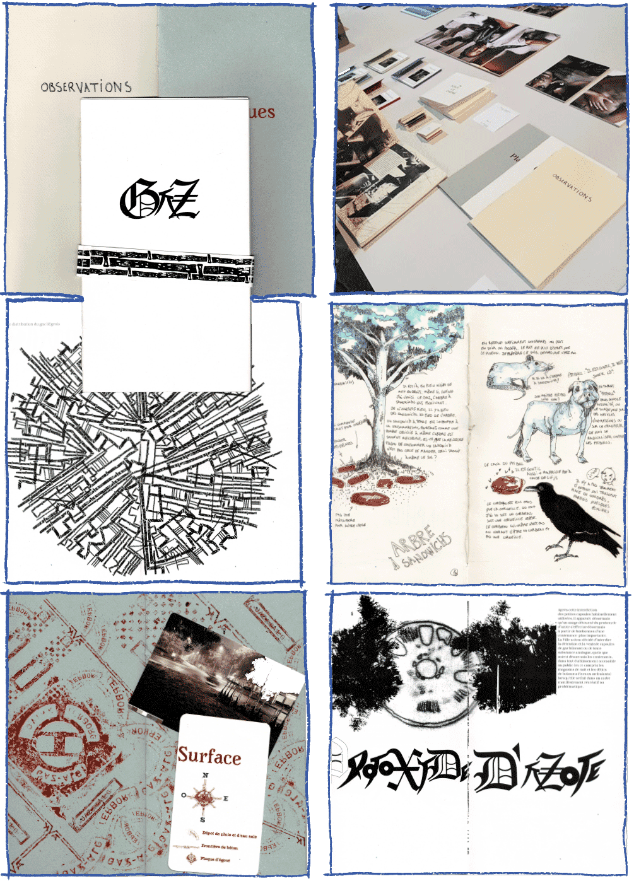
Retour